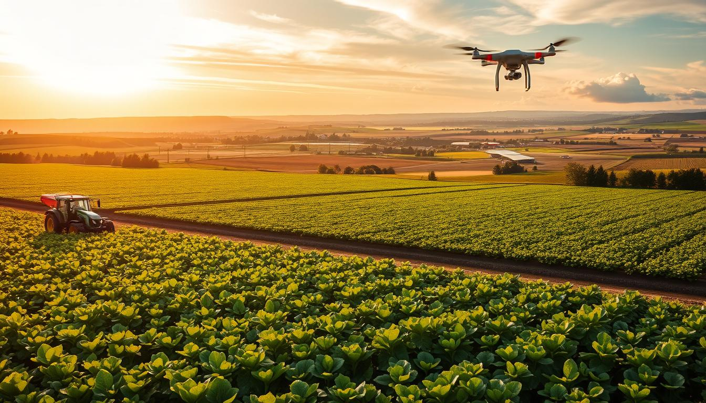

Digital Agriculture brings important farming information and useful tools together to help farmers make better decisions.
Follow a few simple steps to start using digital tools for better farm management.
Register on Digital Agriculture and create your account to access the platform.
Add your crop information and keep track of your farming activities.
Check weather information and plan important farming activities accordingly.
View crop prices and understand current market conditions before selling.
Get useful guidance from agricultural experts for your farming related problems.
Use the available information to manage your farm and make better decisions.
From crop management and weather information to market prices and expert advice, Digital Agriculture provides useful resources in one place.
Start your digital farming journey today.
Get Started →